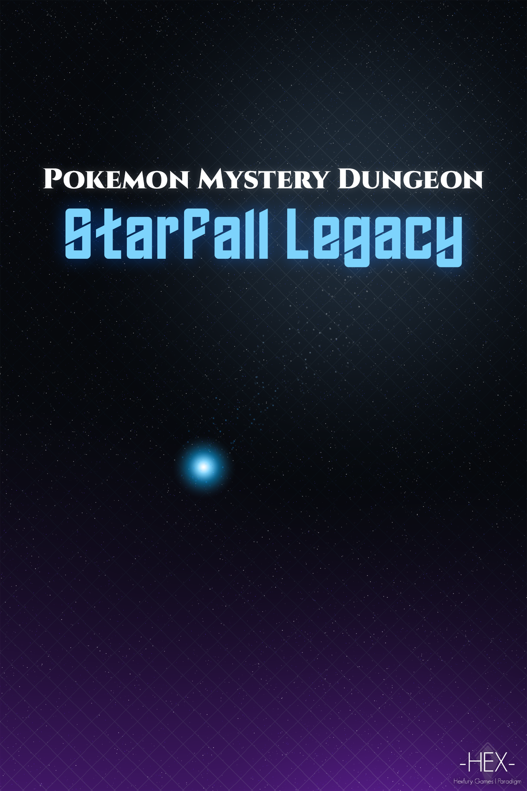
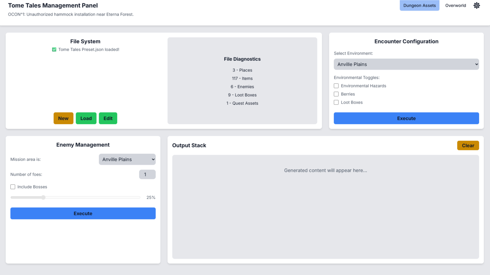
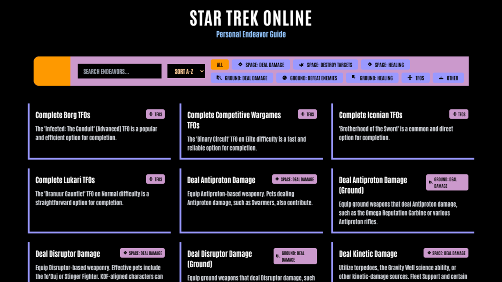

Projects
Starfall Legacy
Collaborative Universe / Lore & Writing

When the U.S.S. Sagittarius is mysteriously pulled from warp and torn across realities, its bridge crew finds themselves stranded on an alien world. Explore chapters, lore archives, disclosures, and behind-the-scenes engineering logs for this collaborative sci-fi fantasy setting.
Aeronautica
Administrative Tools / Backend Developer
Train, Buy, Fly - Aeronautica is an open-world flight simulator with economy elements. Earn money by completing cargo delivery runs, passenger transports, or charter flights. Build fleets, customize airliner configurations, and program mechanics.
TTMP 2
Sole Developer - RPG operations

TTMP, or Tome Tales Management Panel is an interactive dashboard program I developed to aid DMs in running custom campaigns. It handles sandbox operations like monster generation, coin systems, inventory tracking, and runs Lua assemblies directly in-browser using the Fengari Lua VM.
Star Trek Endeavor Guide
Community Companion Tool

A database tool detailing tips, targets, and optimal maps for completing daily Endeavor logs in Star Trek Online. Designed for speed, utility, and clean search filters.
Sandbox Databases
Micro-deployments and tech experiments
-
90s Box Opener
Companion utility for TTMP, loading game files to simulate box openers with old-school pixel grids.
-
LCARS UI Template
Pure CSS template mimicking LCARS structures from Star Trek configurations.
-
Magitech Wiki
A worldbuilding lore site logging the interactions between magic and technological devices in my fictional universes.
-
Neural Pattern Generator
Binaural beat oscillator based on CIA Project Stargate documents detailing cognitive wave synchronization.
AI-Assisted Tools
Rapid-prototype setups utilizing generative networks
-
Stellaris Name List Maker
Utility designed to output structured custom name list scripts for Stellaris modding, utilizing Gemini models for procedural generation.